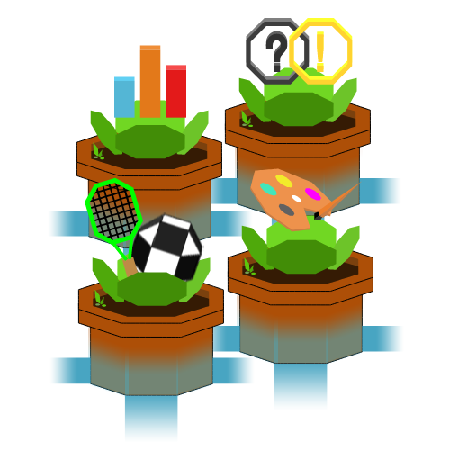

<div class="container-fluid">
  <div class="row">
    <div class="col-sm-4">
      
    </div>
    <div class="col-sm-8">
      <h1>{{ catalog.slice(0, -1) }} Catalog</h1>
      <p>
        Welcome to the Helivox Academic Catalog - your gateway to informed
        academic decision-making! Offering a comprehensive yet personal
        perspective on a wide range of courses and extracurricular clubs/sports,
        Helivox aims to provide meaningful insider insights from students who
        have been there. Discover course/club descriptions, real-life
        experiences, and essential Q&A* to gauge the difficulty, time
        commitment, atmosphere, and curriculum of each class and
        extracurricular. With the Academic Catalog, you can craft your academic
        journey with confidence, choosing courses and activities that resonate
        with your interests and goals! *All interview questions were answered by
        a current student, alumni, teacher, or other individual affiliated with
        the academic opportunity.
      </p>
    </div>
  </div>
</div>
